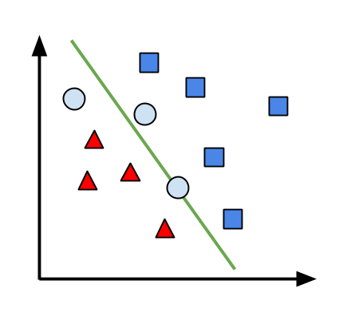
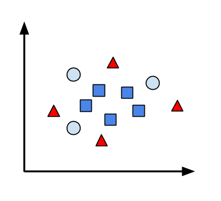
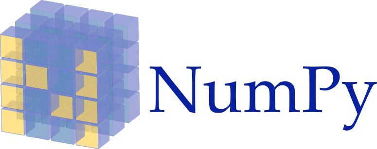
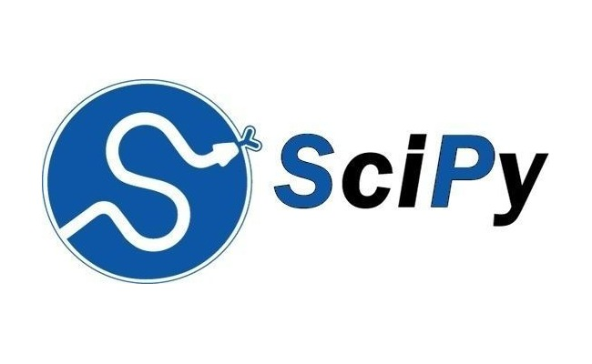
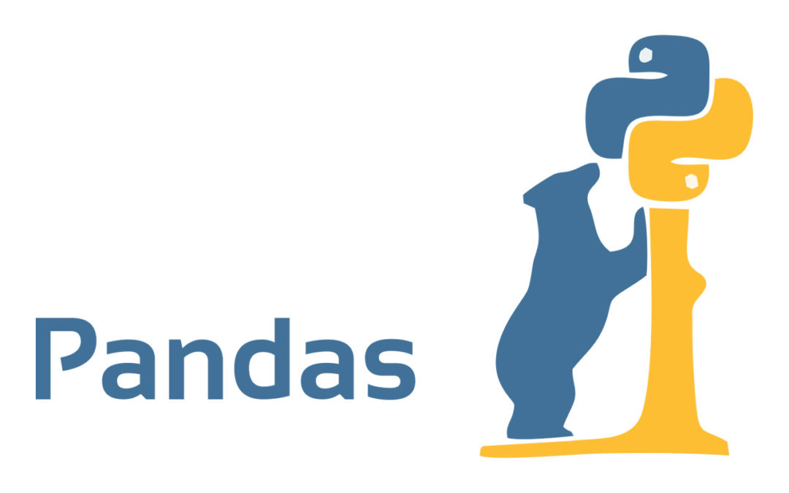
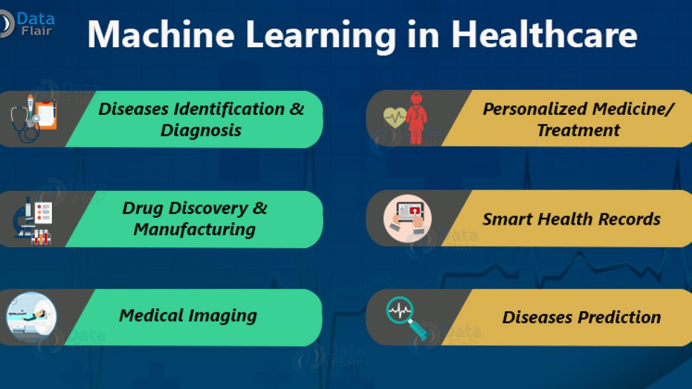
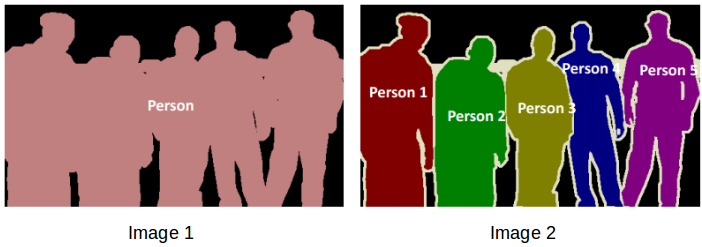

- Được coi là một ngôn ngữ cơ bản dễ học cho những người bắt đầu bước vào học lập trình vì nó có hình thức rất sáng sủa, cấu trúc rõ ràng.
+ Giai đoạn 1: Python 1.x (1990 – 1995).
+ Giai đoạn 2: Python 2.x (đầu năm 2000).
+ Giai đoạn 3: Python 3.x hay Python 3000.
- Ưu
- Dễ học, dễ đọc
- Code ngắn gọn
- Nguồn thư viện phong phú
- Thời gian biên dịch ngắn
- Ngôn ngữ được sử dụng phổ biến
- Đa dạng
- Nhược
- Không có protected, private hay public
- Còn chậm so với C++, Java
- Không là ngôn ngữ cho điện thoại
- Tiêu tốn quá nhiều bộ nhớ
- Có nhiều lỗi Runtime Errors
- Không có vòng lặp do…while hay switch…case

Do chúng ta đang học lập trình bằng ngôn ngữ C ++ nên trong bài viết này ta sẽ so sánh một cách tổng quan để xem giữa Python và C ++ đâu mới là ngôn ngữ đáng học hơn.
- Điều đầu tiên có thể nhắc đến khi nói về C++ là mã code C++ hầu như sử dụng rất nhiều các dấu ngoặc nhọn. Trong khi đó, cách tách thành từng khối của Python sẽ phụ thuộc vào việc thụt đầu dòng của các câu lệnh. Vì vậy khi coder muốn kiểm tra xem đoạn code của mình như thế nào ở C++, coder phải kiểm tra rất nhiều dấu ngoặc, còn ở Python thì việc kiểm tra sẽ khó hơn đôi phần khi chỉ cần tab sai một dòng cũng có thể dẫn đến việc sai cả một project.- Khi kết thúc câu lệnh ở C++, người dùng sẽ thêm dấu ; vào cuối dòng. Còn ở Python, ngôn ngữ này coi phần cuối của dòng là phần cuối của câu lệnh.
- Ở C++, xét về phương diện đại số Boolean, C++ sẽ trả về false hoặc true tùy theo trị số: (0 sẽ là sai, các giá trị trị số còn lại sẽ là đúng). Python cũng hoạt động với cách tương tự, nhưng nếu giá trị là không có hoặc hằng sai thì sẽ trả về sai.
- C++ cần khai báo biến (float, int,…). Còn ở Python, chúng ta có một khái niệm mới là “Gõ động”, cung cấp sự linh hoạt cho việc sử dụng biến. Song nó cũng đưa ra một hệ quả là dẫn đến việc sử dụng biến không phù hợp ở Python. Chính vì lý do này gần như đã làm cho hiệu năng của C++ chiến thắng hoàn toàn so với Python.
- Từ đó suy ra được C++ sẽ tốt hơn cho việc tạo đồ họa lõi cứng và tạo ra các game nặng.
https://blogs.bath.ac.uk/iprblog/
Artificial Intelligence (trí tuệ nhân tạo) hay AI là môt thuật ngữ vừa lạ vừa quen đối với mỗi người. Hiện tại thì thuật ngữ này thực sự đang xuất hiện rất phổ biến trên toàn thế giới. Và nếu bạn để ý thì sự tưởng tượng của con người về diện mạo của AI đã có sự thay đổi vô cùng rõ rệt.
Trước đây, các nhà sản xuất phim thường xuyên đưa hình ảnh robot vào phim (như Terminator), nhằm gieo vào đầu người xem suy nghĩ rằng trí tuệ nhân tạo là một phương thức nhân bản con người bằng máy móc.
Tuy nhiên, trong những bộ phim gần hơn về đề tài này, ví dụ như trong bộ phim Transcendenc, ta không thấy hình ảnh của một con robot nào cả. Thay vào đó là một bộ não điện toán khổng lồ chỉ huy hàng vạn con Nanobot, được gọi là Singularity. Tất nhiên cả hai hình ảnh đều là hư cấu và giả tưởng, nhưng sự thay đổi như vậy cũng một phần nào phản ánh sự thay đổi ý niệm của con người về AI. AI bây giờ được xem như vô hình vô dạng, hay nói cách khác có thể mang bất cứ hình dạng nào. Vì nói về AI là nói về một bộ não, chứ không phải nói về một cơ thể, là software chứ không phải là hardware.
Còn về định nghĩa, AI có thể hiểu là một ngành khoa học được sinh ra với mục đích giúp cho máy tính có được " trí thông minh ". " Trí thông minh " ở đây còn khá mơ hồ nhưng bạn có thể hiểu là giúp máy tính có thể vượt qua bài kiểm tra Turing Test
Bạn có thể tìm hiểu thêm về Turning Test thông qua video sau đây:
Nguồn: Youtube channel Eye on Tech
Và để đạt được mục tiêu này thì một trong những phương pháp được kì vọng sẽ giúp máy tính có được “ trí thông minh” không gì khác đó chính là Machine Learning. Tuy đây vẫn là một con đường rất dài nhưng cũng rất đáng để kỳ vọng. Mặc dù AI vẫn là mục tiêu tối thượng của Machine Learning nhưng hiện tại Machine Learning đang tập trung vào những mục tiêu ngắn hạn hơn như:
1. Làm cho máy tính có những khả năng nhận thức cơ bản của con người như nghe, nhìn, hiểu được ngôn ngữ, giải toán, lập trình, …
2. Hỗ trợ con người trong việc xử lý một khối lượng thông tin khổng lồ mà chúng ta phải đối mặt hàng ngày, hay còn gọi là Big Data.
Nguồn: https://topdev.vn/blog/big-data/
Big data thực chất không là một môn khoa học chính thống, nó là một cụm từ được sử dụng để ám chỉ thời kì bùng nổ của dữ liệu hiện nay. Big data là một hệ quả tất yếu của việc mạng Internet ngày càng có nhiều kết nối. Với sự ra đời của các mạng xã hội như Facebook, Instagram, Twitter, … nhu cầu chia sẻ thông tin của con người đã tăng lên một cách chóng mặt.
Nếu chỉ nói Big Data ra đời do sự bùng nổ dữ liệu không thì cũng chưa đủ. Cụm từ này chỉ được nổi lên cách đây vài năm, nên nhớ là trước đây ở thời kì đầu của Internet thì khối lượng dữ liệu tích tụ cũng không phải là nhỏ. Vậy thì sự khác biệt giữa việc dữ liệu được sử dụng trước và sau khi cụm từ Big data xuất hiện là gì ?
Nếu như trước đây chúng ta chỉ có có thể lưu trữ và sao chép hàng tá dữ liệu thì cho đến nay các nhà khoa học đã nhận thấy trong đống dữ liệu ấy ẩn chứa hàng tá tri thức khổng lồ. Những tri thức này giúp cho ta hiểu thêm về con người và xã hội. Nói ví dụ như từ danh sách các bài hát yêu thích của một cá nhân ta có thể suy luận để suy ra được sở thích của người đó và gợi ý các bài hát có thể sẽ phù hợp với người này. Big data chỉ thực sự tồn tại nếu chúng ta hiểu được giá trị tiềm ẩn trong dữ liệu và khai thác nó trên quy mô khổng lồ. Và không có gì ngạc nhiên khi Machine Learning lại chính là thành phần mấu chốt của công nghệ đó. Ở đây ta có một quan hệ hỗ tương giữa Machine Learning và Big Data: machine learning phát triển hơn nhờ sự gia tăng của khối lượng dữ liệu của Big Data; ngược lại, giá trị của Big Data phụ thuộc vào khả năng khai thác tri thức từ dữ liệu của machine learning.
-Hành động này lại đụng đến một trong những đặc điểm ưu việc của Machine Learning đó là Khả năng tổng quát hoá mà ta sẽ tìm hiểu ở phần sau
 
Nguồn: https://vi.wikipedia.org/wiki/Học_máy
Những điểm tam giác và vuông đại diện cho những email chúng ta đã biết nhãn trước. Chúng được dùng để "huấn luyện" (train) perceptron. Sau khi vẽ đường thẳng chia hai tập điểm, ta nhận thêm các điểm chưa được dán nhãn, đại diện cho các email cần được phân loại (điểm tròn). Ta dán nhãn của một điểm theo nhãn của các điểm cùng nửa mặt phẳng với điểm đó.Sơ lược quy trình phân loại thư được mô tả sau. Trước hết, ta cần một thuật toán để chuyển email thành những điểm dữ liệu. Công đoạn này rất rất quan trọng vì nếu chúng ta chọn được biểu diễn phù hợp, công việc của perceptron sẽ nhẹ nhàng hơn rất nhiều. Tiếp theo, perceptron sẽ đọc tọa độ của từng điểm và sử dụng thông tin này để cập nhật tham số của đường thẳng cần tìm. Các bạn có thể xem qua demo của perceptron (điểm xanh lá cây là điểm perceptron đang xử lý)
Lúc này, ta cần các loại đường phân chia "không thẳng". Nhưng đó lại là một câu chuyện khác. Với một thuật toán đơn giản được phát hiện ra vào năm 1957 thì ta nhận ra được tìm năng vô cùng to lớn của Machine Learning trong cuộc sống của con người.
- Có thể ví một hệ thống Machine Learning không có khả năng tổng quát như một con vẹt: chỉ trả lời được những câu hỏi nó đã học thuộc lòng đáp án. Khả năng tổng quát hoá là một khả năng tự nhiên và kì diệu của con người. Bạn không thể nhớ hết được khuôn mặt người trên thế giới nhưng khi đưa có bạn một khuôn mặt bạn có thể nhận ra đó có phải là khuôn mặt người hay không với xác xuất gần như là tuyệt đối. Đỉnh cao của Machine Learning là mô phỏng lại được khả năng tổng quát hoá và suy luận này của con người.
- Python mang âm hưởng toán học và giống với lối đọc/ hiểu của con người nên nó giúp đơn giản hoá các vấn đề để tập trung và AI, ML so với các ngôn ngữ khác
- Python phù hợp dể làm công việc cộng tác ( làm nhóm)
Một dự án ML có thể rất phức tạp và tốn nhiều thời gian vì thế để giảm thiểu thời gian phát triển của dự án, các lập trình viên bắt đầu chuyển sang một số Framework và Thư viện của Python.
Một số kho framework được sử dụng trong trí tuệ nhân tạo và ML có thể kể đến như:
- Keras, TensorFlow, and Scikit-learn cho Học máy


Nguồn: Internet
- NumPy cho phân tích dữ liệu và tính toán khoa học hiệu năng cao

Nguồn:https://codelearn.io
- SciPy cho advanced computing

Nguồn:https://codelearn.io
- Pandas để phân tích dữ liệu mục đích chung

Nguồn: https://www.kindpng.com
- Seaborn cho trực quan hóa dữ liệu (Data Visualization)

Nguồn:https://seaborn.pydata.org/
Với những framework này lập trình viên có thể phát triển sản phẩm của mình một cách toàn diện và nhanh chóng hơn.
Nguồn:www.analyticsinsight.net/how-artificial-intelligence-is-reforming-the-manufacturing-industry/

Nguồn:https://blog.skyl.ai/how-machine-learning-can-help-rate-credit-risk/

Nguồn:https://www.slideshare.net/scoopnewsgroup/

Nguồn:https://data-flair.training/blogs/machine-learning-in-healthcare/
Nguồn:https://aliz.ai/machine-learning-in-digital-marketing-apply-ml-for-marketing-like-a-pro/

Nguồn:https://www.appsrhino.com/machine-learning-in-logistics-industry/
Nguồn: https://dribbble.com/shots/3185625-Virtual-Assistants
- Machine Learning được ứng dụng để:
+ Nhận dạng giọng nói ( Speech Recognition)
+ Chuyển đổi lời nói thành văn bản
+ Xử lý ngôn ngữ tự nhiên
+ Chuyển đổi văn bản thành giọng nói
- Một số phần mềm Trợ lý ảo nổi tiếng có thể kể đến: Google Assistant, Siri, Cortana, …
- Trong đó Google Assistant được lập trình dựa trên nền tảng ngôn ngữ Python.
Chúng ta sẽ tìm xem một ví dụ về sử dụng Python đẻ lập trình một hệ thống trợ lý ảo đơn giản:
Nguồn: Youtube channel Dipesh Pal
+ Khi nào bạn tạm dừng, bạn tua lại hoặc tua nhanh
+ Ngày nào bạn xem nội dung gì
+ Những bộ phim được bạn xem lại nhiều lần là gì?
Và còn nhiều thông tin khác sẽ được máy tính thu thập để sử dụng vào Machine Learning.
- Có thể kể đến một số công ty nổi tiếng hiện nay đang áp dụng hệ thống học máy vào ứng dụng của mình để tăng trải nghiệm người dùng như Netflix, Spotify,.. và một điều không thể bỏ qua là Netflix và Spotify đều được lập trình phần lớn dựa trên ngôn ngữ Python. Việc những công ty lớn có tiếng hàng đầu thế giới sử dụng Python để lập trình ứng dụng của mình cũng đã đủ chứng minh khả năng của Python trong việc học máy.

Nguồn: Netflix.com & Spotify.com.vn
Nguồn:https://www.appsrhino.com/machine-learning-in-logistics-industry/
Hệ thống nhận diện khuôn mặt bằng Python theo thời gian thực có khả năng xác định hoặc xác minh một người từ video qua các thiết bị ghi hình. Thư viện và ngôn ngữ sử dụng cho hệ thống này là Python và OpenCV. Thuật toán xác định khuôn mặt dựa trên hai tính chất chung cho khuôn mặt của con người là:
1. Khu vực mắt tối hơn má trên.
2. Khu vực mũi cây sáng hơn so với mắt.
Thành phần của hai tính chất tạo thành các đặc điểm khuôn mặt là:
1. Vị trí và kích thước bao gồm mắt, miệng và mũi mũi
2. Giá trị cho các độ dốc định hướng của cường độ điểm ảnh.
Ví dụ, sự khác biệt về độ sáng giữa các hình chữ nhật trắng và đen trên một khu vực cụ thể được cho bởi:
Value = ∑(pixels trong vùng đen) − ∑(pixels trong vùng trắng).
Nguồn:https://sergilehkyi.com/image-segmentation-with-python/
Nguồn:https://www.analyticsvidhya.com/blog/2019/04/introduction-image-segmentation-techniques-python/

Nguồn:https://www.ciobulletin.com/assets/home_image/ciobulletin-voltdb-v7.6-is-a-database-with-real-time-fraud-detection-and-prevention.jpg?fbclid=IwAR18YvRrYBM-OjIsptWmzRW7QKR6TOOriJvIX-9F4q1qYy5rxcR6O8ECFM4
Và trên đây là những gì chúng mình muốn nói về Python và vì sao nó được gọi là ngôn ngữ dành cho học máy.
[2] Geeksforgeeks: Disadvantages of Python, www.geeksforgeeks.org/disadvantages-of-python. Truy cập 01/02/2021.
[3] Net-informations.com: What are the drawbacks of Python?, http://net-informations.com/python/iq/disadvantages.htm. Truy cập 01/02/2021.
[4] Visualcpp: So sánh sự khác biệt giữa ngôn ngữ lập trình C++ và Python, http://visualcpp.net/so-sanh-su-khac-biet-giua-ngon-ngu-lap-trinh-c-va-python. Truy cập 01/02/2021.
[5] Khanh-personal Gitbook: Machine Learning là gì?, https://khanh-personal.gitbook.io/ml-book-vn/machine-learning-la-gi. Truy cập 01/02/2021.
[6] Expert.ai: What is Machine Learning? A Definition, https://www.expert.ai/blog/machine-learning-definition. Truy cập 01/02/2021.
[7] NIIT - ICT HÀ NỘI: TẠI SAO lại sử dụng PYTHON cho AI và Machine Learning?, https://niithanoi.edu.vn/tai-sao-lai-su-dung-python-cho-ai-va-machine-learning.html. Truy cập 01/02/2021.
[8] Tecktrending: Tại sao Python là phù hợp nhất với Machine Learning?, http://tecktrending.com/tai-sao-python-la-phu-hop-nhat-voi-machine-learning. Truy cập 01/02/2021.
[9] Real Python: 8 World-Class Software Companies That Use Python, https://realpython.com/world-class-companies-using-python. Truy cập 01/02/2021.
[10] Java T point: Applications of Machine learning, https://www.javatpoint.com/applications-of-machine-learning. Truy cập 01/02/2021.
[11] Wikipedia: Virtual assistant, https://en.wikipedia.org/wiki/Virtual_assistant. Truy cập01/02/2021.
[12] Towardsdatascience: Building a Face Recognizer in Python, https://towardsdatascience.com/building-a-face-recognizer-in-python-7fd6630c6340. Truy cập 01/02/2021.
[13] Congnghe102:Nhận dạng khuôn mặt thời gian thực bằng Python và OpenCV, https://congnghe102.com/p/nhan-dang-khuon-mat-thoi-gian-thuc-bang-python-va-opencv.html. Truy cập 02/02/2021
[14] Data Flair: Image Segmentation with Machine Learning, https://data-flair.training/blogs/image-segmentation-machine-learning. Truy cập 01/02/2021.
[15] Daviteq: Ứng dụng của máy học trong sản xuất: Lợi ích của máy học trong sản xuất, https://www.daviteq.com/blog/vi/loi-ich-cua-may-hoc-trong-san-xuat.Truy cập 05/02/2021
[16] CAND:Quản lí dân cư bằng công nghệ 4.0 – nhiều lợi ích với người dân và doanh nghiệp, http://cand.com.vn/Van-de-hom-nay-thoi-su/ Quan-li-dan-cu-bang-cong-nghe-4-0-nhieu-loi-ich-voi-nguoi-dan-va-doanh-nghiep-608158/. Truy cập 05/02/2021
Top 1st Server
Upgrade Every day
Thank You for reading
Meet our team